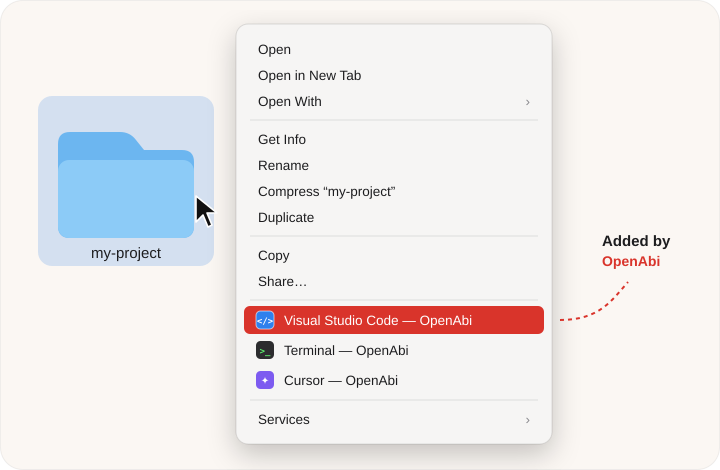

Right‑click any folder in Finder and open it in VS Code, Cursor, Zed, Terminal, iTerm, Ghostty, or any app you like. Set up in two seconds.
Free & open source · Notarized by Apple · macOS 14+ · Apple Silicon & Intel
or brew tap firatmelih/openabi https://github.com/firatmelih/OpenAbi && brew install --cask openabi
One right‑click away
cd ~/projects/… && code .Windows has had “Open with Code” in the right‑click menu forever. Finder's Open With doesn't even show up for folders. Abi fixed it.

How it works
Three steps, about ten seconds.
Quick setup finds your editors and terminals. Or drag any app onto Folders, All Files, or a type like .md.
On a folder, a file, a selection, or the empty background of a window.
OpenAbi opens the folder with your app, exactly like you double‑clicked it there.
Features
Does one thing, and does it well.
Finds VS Code, Cursor, Windsurf, Zed, Sublime, Nova, Terminal, iTerm, Ghostty and Warp. One click adds them all.
Folders, all files, or exact extensions like .json, .md or .xcodeproj. Drag in any .app.
Add a mustache to Finder's toolbar, then open the current folder in any of your apps in one click.
Clean “Open in …” items, or tuck them all into a single OpenAbi ▸ submenu.
Get notified right in Finder and update in one click. Never download it again.
SwiftUI, signed and notarized by Apple. No accounts, no telemetry. Your rules never leave your Mac.
Install
Make sure the extension is on: click Enable in System Settings… in OpenAbi, or go to System Settings → General → Login Items & Extensions → Finder and turn on OpenAbi. Keep a single copy of the app in Applications. If needed, hold ⌥, right‑click Finder in the Dock, and choose Relaunch.
No. Finder loads the extension by itself. Open the app only when you want to change your rules; changes apply immediately.
OpenAbi updates itself with Sparkle. When a new version is out, you'll see Update OpenAbi… in your Finder right‑click menu. One click installs it; no re‑downloading.
Yes. Select several files or folders and right‑click. OpenAbi shows the apps that match every selected item and opens them all together.
In Turkish, abi is what you call your big brother, or any older guy who helps you out. Our abi has a proud mustache and always knows which app your files should open in.
Quit OpenAbi and move it to the Trash. The README lists the two small folders it leaves behind, if you want a perfectly clean slate.
Free, open source, and made with çay ☕ in Türkiye.